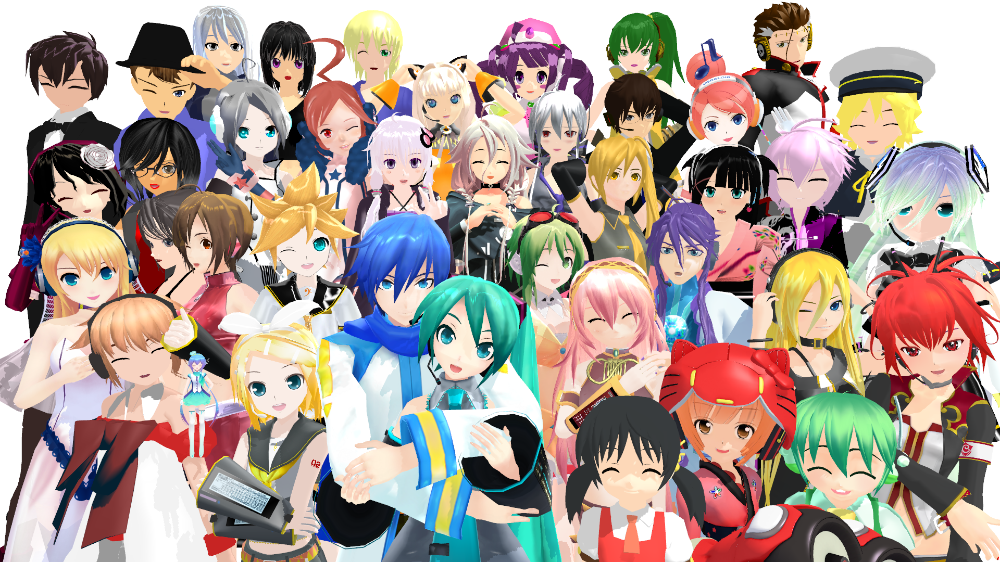
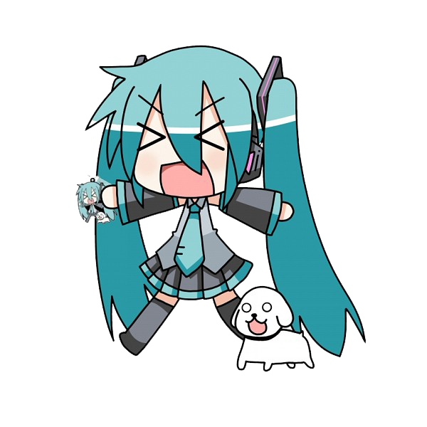
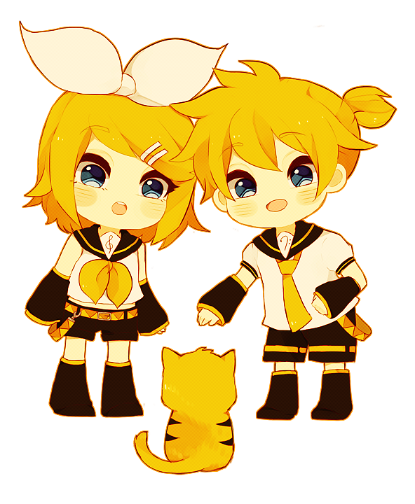
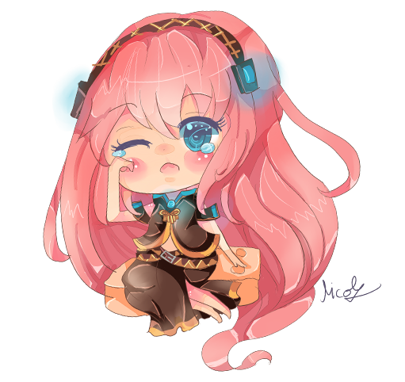
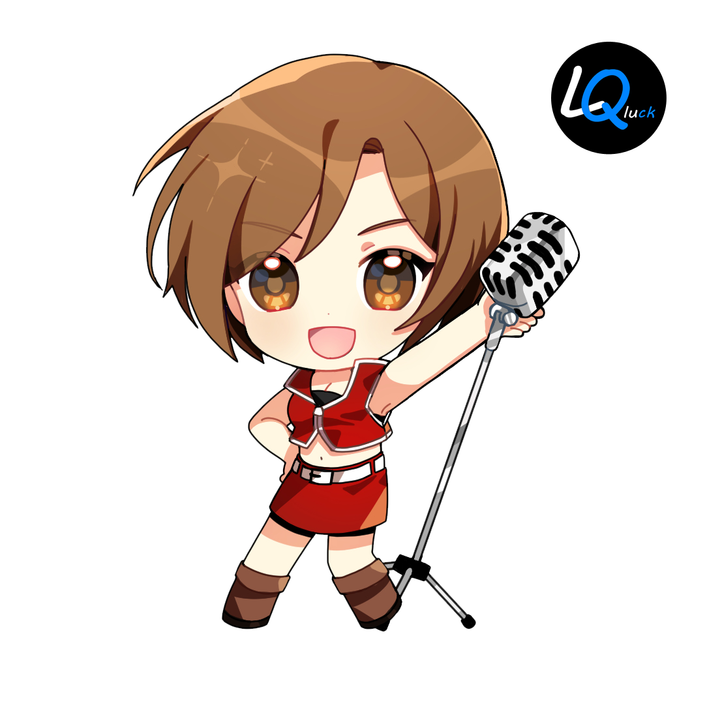

There are currently 69 vocaloids, but to get started you only need to know the main six. These are: Hatsune Miku, Len Kagamine, Rin Kagamine, Megurine Luka, MEIKO and KAITO. The fandom likes to show these six as very close friends. MEIKO and KAITO are often seen as the 'adults' of the group, being confirmed to be middle aged.

Hatsune Miku
Hatsune Miku is the most famous Vocaloid. She is confirmed by the creators to be 16 years of age. Her character item is a leek. Miku has performed many songs, a few of the most famous ones being 'World is mine' and 'Sand planet'. Hatsune Miku is often shipped with two other female Vocaloids called Rin Kagamine and Megurine Luka.

Rin and Len Kagamine
Rin and Len are both 14. They are often percieved as siblings even though they are just the genderbent version of eachother. Len's item is a bannana and Rin's is a mikan orange. Len is most famous for dying in almost all of the songs he sings. Like Hatsune Miku, the Kagamine's have also sung a lot of songs.

Megurine Luka
Megurine Luka was the first Voclaoid created to have English and Japanese voicebanks! Her character is said to be 20 years of age. Luka's item is a tuna fish, she even has a very popular song about it. One of her most recognisable song was performed with Hatsune Miku, and it's calleld 'Magnet'. Luka was designed by the same artist who made Miku, Len and Rin. She is often shipped with Miku and MEIKO.

MEIKO
MEIKO is percivied to be middle aged. MEIKO's item is a funny one, alchol. Because of this, the fandom often likes to show her as drunk. MEIKO has two original songs that have amassed over 1M views. These are 'Nostalgic' and '悪食娘コンチータ'. MEIKO is often shipped with KAITO and Luka.

KAITO
KAITO, just like MEIKO is also percived to be middle aged. His item is one most people love, icecream! KAITO has many more original songs that have amased over 1M views than MEKIO. Two of these songs are, 'FLOWER TAIL' and 'Believe'. He is often shipped with MEIKO and Gakupo.